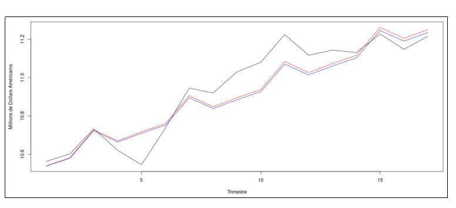
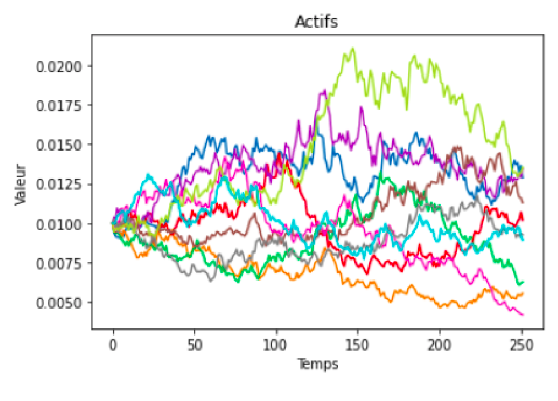
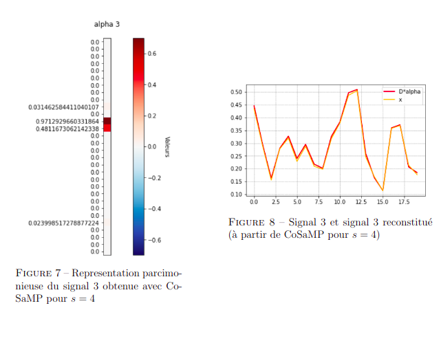
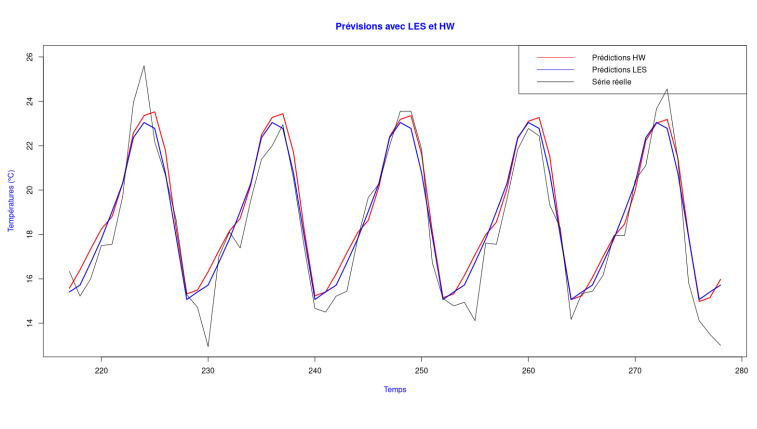

Projects
Last years, I worked on the following few projects.
Quaterly Google revenue time serie forecasting

- Github link (fr)
- Simulation of auto-regressive and mooving average stochastic processes
- Making the time serie stationnary by differencing
- SARIMA models to perform predictions on quaterly Google revenue
Markowitz portfolio optimization

- Github link (fr)
- Assets simulation according to Black and Scholes model
- Analytical resolution of different optimization problems of portfolio allocation
- Efficient frontier's equation and simulations
- Study of Value at Risk (VaR)
- Implementation of Newton, Lagrange-Newton, Uzawa, Choi and Chen algorithms
Implementation of compressed sensing algorithms

- Sparse coding of signals in a given dictionary with MP, OMP, StOMP, CoSaMP
- Iteratively reweighted least squares (IRLS) method
- Compressed sensing process, measure matrices, (mutual) consistency
Study of the time serie of monthly temperatures in San Diego

- Github link (fr)
- Trend and seasonality analysis
- Removing seasonality by mooving average method and regression on time
- Predictions with basic exponential smoothing and Holt Winters method
Object localization with TensorFlow
- Creating labeled data with different emojis
- Creating and training a convolutional neural network with 2 outputs: the type of the emoji and its localization
- Using the inter over union metric to evaluate the model
Image compression with Single Value Decomposition
- Separating image channels
- Calculating low rank approximation for each channel
- Reconstructing the compressed image
- Comparing with original image
- Calculating and visualizing the PSNR (Peak Signal to Noise Ratio)
Cost optimization for a cement
- Linear optimization of transport and energy costs
- Using Python to create an application (tkinter library) to resolve the optimization problem depending of needs, stocks and buildings of the ciment plant (PuLP library)
- Processing of french cement plants data using PCA (Principal Component Analysis) with RStudio
Store website for textbooks
- Creating the website using HTML, CSS, PhP and JavaScript
- Using Wampserver and MySQL to manage users information
- Explaining my choices in a report
Sudoku resolution
- Github link
- Writting functions to check if a number can be in a given cell in accordance with sudoku rules
- Writting a function to find empty cells
- Using these functions to solve sudoku grids with a backtracking algorithm